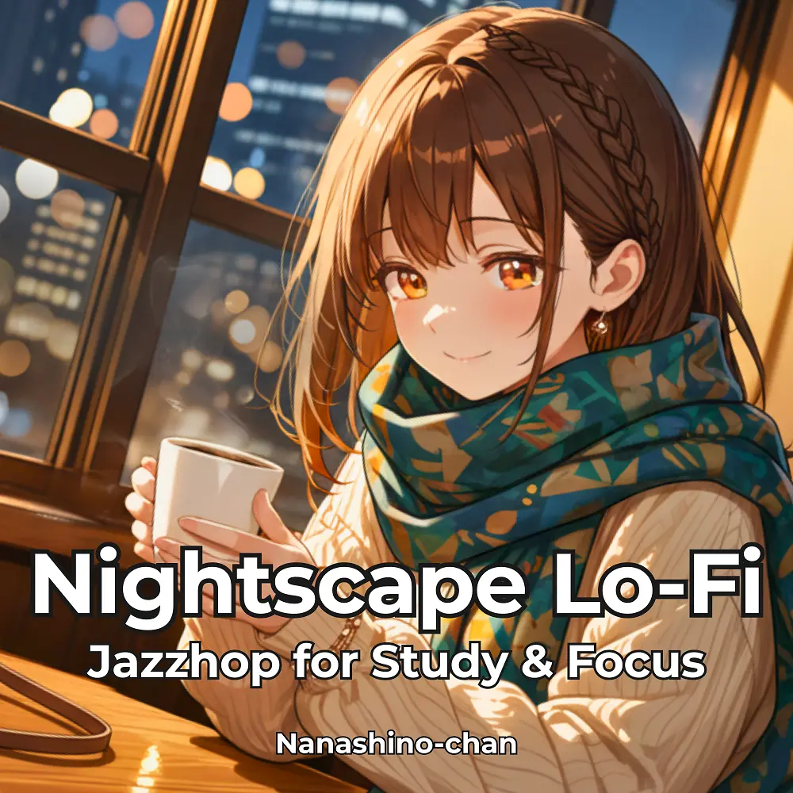

Lo-Fi · Jazzhop
Nightscape Lo-Fi Jazzhop for Study & Focus
Nanashino-chan
Explore Nightscape Lo-Fi Jazzhop for Study & Focus by Nanashino-chan: 23 instrumental tracks spanning Lo-Fi / Jazzhop. Start with Night Breeze Intro / Coffee & Vinyl Glow, preview the collection and find your favorites on streaming services.
2026-02-06 · Released · 23 tracks · Instrumental
Preview the album
The jacket stays here until you choose a track. Playback uses Apple Music. Select your track inside the player.
APPLE MUSIC PREVIEW
Choose a track to listen
The jacket stays here until you choose a track. Playback uses Apple Music. Select your track inside the player.
If playback is unavailable, open the album or track on the streaming service.
Find this album on streaming services
Links marked “search” open search results. Select the album or track on the service.
Track list 23
- 01Night Breeze Intro
- 02Coffee & Vinyl Glow
- 03.Slow Walk, Omotesando
- 04Warm Lights Through Glass
- 05Late Night Espresso
- 06City Reflections
- 07Gentle Piano Rain
- 08Café Conversations
- 09Cozy Winter Mood
- 10Jazzhop Sketches
- 11Midnight Calm
- 12Candlelight Groove
- 13Passing Taxi Lights
- 14Warm Cup Memories
- 15Side Street Dreams
- 16Piano Afterglow
- 17Gentle Steps Home
- 18Moonlit Reflections
- 19Night Café Reprise
- 20Smooth Jazz Hour
- 21Closing Time
- 22City Sleeps, You Stay
- 23Farewell Waltz
Find a sound for your next post
Copy “Nanashino-chan + track title” and paste it into your social app’s music search. Availability depends on your region and account. Copying the name does not grant usage rights.